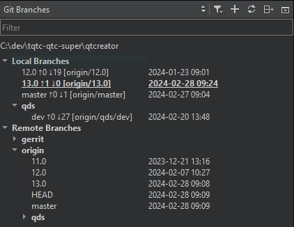
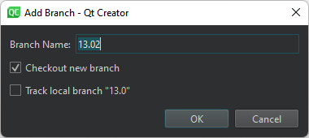

git branch
To work with Git branches, go to Tools > Git > Local Repository and select Branches.
The Git Branches view shows a list of branches, as well as the differences between your local branches and their origin. The branch you checked out is shown in bold and underlined.

Filter entries and tags
Old entries and tags are filtered out of the list of branches by default. To include them, select  (Filter), and then select Include Old Entries and Include Tags.
(Filter), and then select Include Old Entries and Include Tags.
To add a tag to a change in the change log, select Branches > Log. Select the change, and then select Add Tag for <hash> in the context menu.
If you checked out a specific commit, the list of branches displays a Detached HEAD entry.
For local and remote branches, double-click the branch name to view the change log.
To refresh the list of branches, select  (Refresh).
(Refresh).
Add branches
To create a new tracking or non-tracking branch, select  (Add Branch).
(Add Branch).

To check out the branch when creating it, select Checkout new branch.
To track the selected branch, select Track local branch.
Manage branches
The context menu for a branch has the following functions:
| Menu Item | Description |
|---|---|
| Add | Create new tracking and non-tracking branches. |
| Remove | Remove a local branch. You cannot delete remote branches. |
| Rename | Rename a local branch or a tag. You cannot rename remote branches. |
| Checkout | Check out the selected branch and make it current. You can stash changes you have made to tracked files. |
| Diff | Show the differences between the selected and the current branch. |
| Log | Show the changes in a branch. |
| Reset | Reset the active branch to the selected branch. You can choose between a Hard, Mixed, and Soft reset. For more information, see git reset. |
| Merge | Join the development histories in two branches together. |
| Rebase | Copy local commits to the updated upstream head. |
| Cherry Pick | Cherry pick the top commit from the selected branch. |
| Track | Set the current branch to track the selected one. |
| Push | Push the committed changes to the selected remote branch. |
The context menu for a remote branch has the following additional functions. To open it, select Remote Branches or a remote repository.
| Menu Item | Description |
|---|---|
| Fetch | Fetch all the branches and changes information from a specific remote repository, or from all remotes if applied to Remote Branches. |
| Manage Remotes | Open the Remotes dialog. |
See also How To: Use Git and Git.